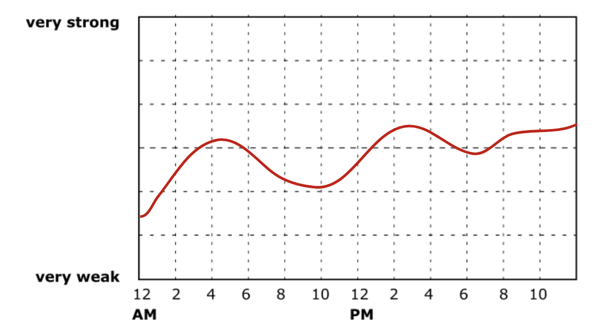

We will give you an overview of the most important tools in the study and how to use them.
You can select 20 experiment days within a time period of four weeks. If anything prevents you from adhering to the schedule, please let the experimenter know.
The study contains four main tasks for each experiment day (before going to bed):
We would like to record brain data during sleep to examine which brain activity is linked later increases or decreases in chronic pain levels.
What to do? Please put on the EEG headband before going to bed and leave it on during the night. When you wake up in the morning, turn off the headband and charge it using the magnetic charger provided. Data are only uploaded to a cloud while the headband is charging, so it is important to charge the headband after every use.
When? Please wear the EEG headband during the night following an experiment day.
How? Follow these instructions to learn how to use the Dreem headband.
We would like to know your view about what your chronic pain feels like and which factors influence it.
What to do? You are asked to fill out a pain diary. To fill out the pain diary, please click on the link in the "Home" tab of the study portal.
When? The pain diary needs to be filled out every evening before going to bed.
How? To fill out the pain diary, please click on the link in the "Home" tab of the study portal. This link will take you to a short survey asking you to describe what your pain and body perception feels like today. You will also be asked to describe which factors you believe to influence your pain and body perception.
We use a novel method called retrospective experience tracing to rate the intensity of different aspects of chronic pain experience across time. Each experience trace maps the intensity of a pain experience component against time.
What to do? You are asked to indicate the intensity of emotional and cognitive pain experience components on a grid.
Each experience trace is headed by a question such as "To which extent is your pain burning?".
To answer this question, you can draw the intensity of their experience in time on a 24h time scale.
Example of a retrospective experience trace measuring pain intensity

You can leave gaps during times when you were sleeping. However, please indicate your pain experience when you were supposed to be sleeping but could not sleep.
When? Please fill out the experience traces every evening before going to bed.
How? To fill out the retrospective experience traces, please click on the link in the "Home" tab of the study portal. This link will take you to a short survey asking you to describe what your pain and body perception feels like today. You will also be asked to describe which factors you believe to influence your pain and body perception.
We want to know how natural fluctations in attention to the body influence pain experience.
What to do? You are asked to pay attention either to your painful limb, non-painful limb, heartbeat or breathing for 5 minutes each. To perform the task, please put on the EEG headband and press the Top buttom three times to start recording (indicated by a voice). Please sit down in a comfortable position and close your eyes. The screen will show which aspect of the body to attend to. A gong will sound to highligh the start and end of each session. After each session, you will be asked to indicate the intensity of emotional and cognitive pain experience components using retrospective experience tracing. You are asked to draw the intensity of pain experience aspects retrospectively for the last 5 minutes.
When? Please perform the attention task on each experiment day. Ideally, you can perform the attention task when you fill out the pain experience diary and ratings before going to bed.
How? To perform the attention task, please click on the link in the "Home" tab of the study portal.